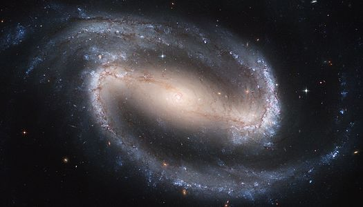

Una galaxia espiral barrada es aquella con una banda
central de estrellas brillantes que abarca de un lado
a otro de la galaxia. Los brazos espirales parecen surgir
del final de la "barra" mientras en las galaxias espirales
parecen surgir del núcleo galáctico. Las barras son
relativamente comunes: hasta dos tercios de las galaxias
espirales contienen una.1 Dichas barras generalmente
afectan tanto al movimiento de las estrellas como al del
gas interestelar dentro de la galaxia espiral, y pueden
afectar también a los brazos espirales.2
